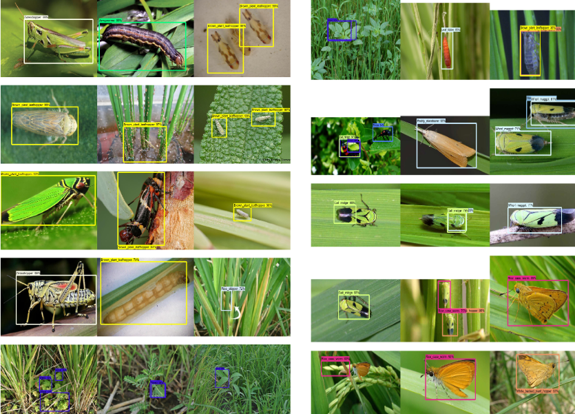

Identity Recognition
Identity Recognition has a vast range of applications in the current industry where it can be used for preventing outsiders to enter into their organization. In this Identity Recognition project we have trained the deep neural model by giving so many images of the people (20 samples per person) and then we have taken feed from the web cam to predict the identities of person present in each frame.by this project you can easily detect different people with their identities.
Smile Detection
Emotion detectors are used in many industries, one being the media industry where it is important for the companies to determine the public reaction to their products. In this mini project we are going to build a smile detector using OpenCV which takes in live feed from webcam and dectect the smile which we can call as a happiness detctor. We are going to achieve this by harcascade xml files. Haar-cascades are classifiers that are used to detect features (of face in this case) by superimposing predefined patterns over face segments and are used as XML files. In our model, we shall use face, eye and smile haar-cascades, which after downloading need to be placed in the working directory. with these xml we can easily detect the smile, eyes, face etc by their neighbours.

Weed Detection In Rice Crop Using R-CNN and OpenCv
We all know about the increase in the population of the world so as usual the demand for rice also gets increased. For increasing the growth of rice in the crop we need to detect the weed and insects so that the growth of weed and insects could be decreased and there will be anincrease in the growth of rice.
Deep Learning concept faster region-based convolutional neuralnetworks(Faster R-CNNs) is the proposed method that is used in the extraction of weed and insects into the rice crop field, that is accomplished using Python3 by using TensorFlow API. We can see the outcome in which the Faster R-CNN method is the state of arts method which is used for detection and classification of weed and insects which provide a good accuracy rate.